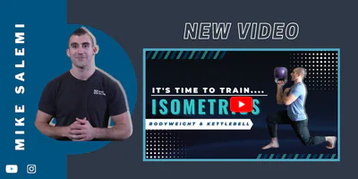

B720 · Hold it right there: Isometrics are amazing
Hi {first_name},
Almost everyone overlooks isometric holds. By incorporating isometrics into your training, here are just some of the benefits you'll be able to experience:
My theory on why people rarely do isometrics is that it feels boring to hold a single position...and the fact that it is difficult!
One solution that you can explore while performing isometrics is to distract yourself from the isometric hold itself and integrate strength training components for other regions of the body - this week’s video shows you exactly what to do. The isometric hold this week is with the split squat, which is an amazing exercise all on its own.
Follow the progressions in this video and note your progress.
 I hope you enjoy implementing these into your training today.
Keep training intentionally, Mike Salemi
P.S. Interested in training with me each week? Click here to learn more about weekly KBL LIVE classes. Our next training cycle starts on Wednesday! |